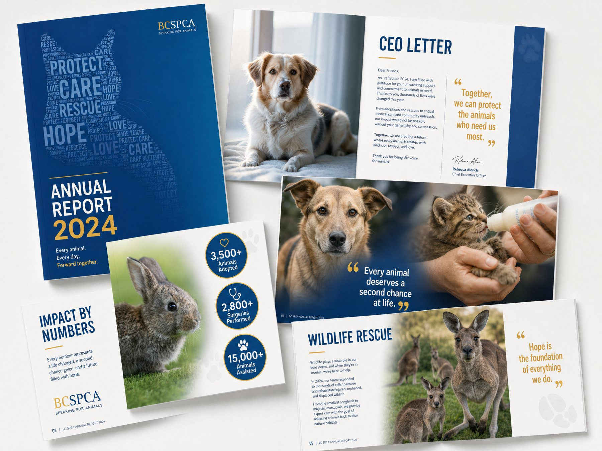
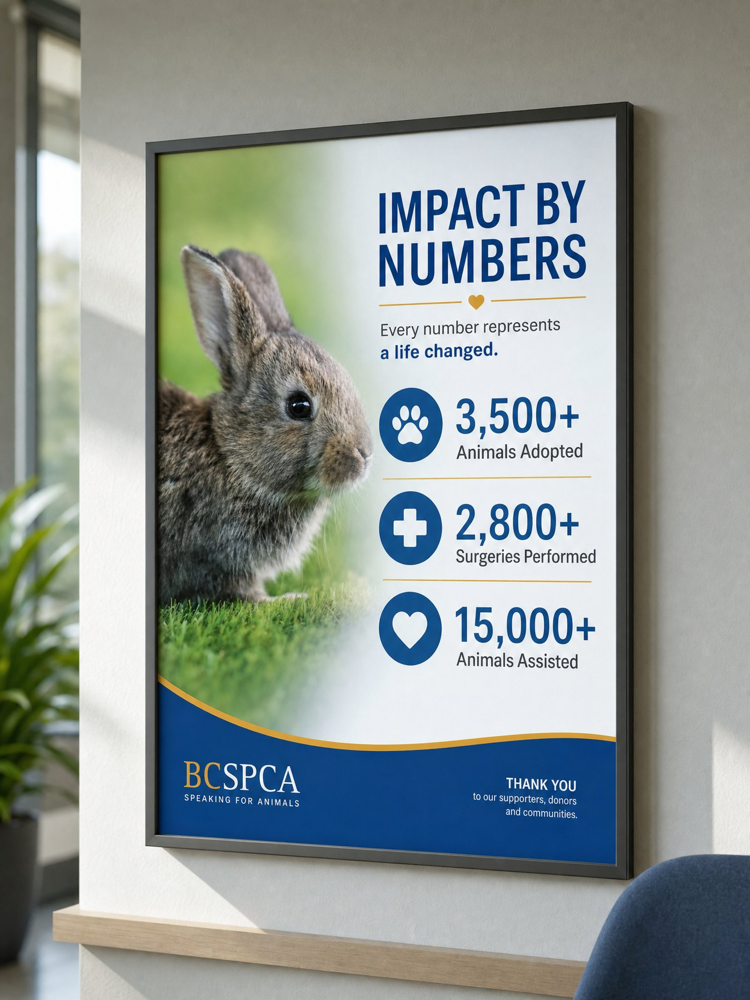
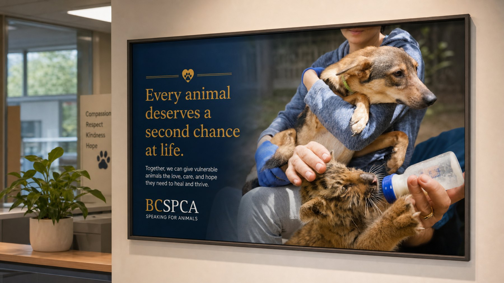
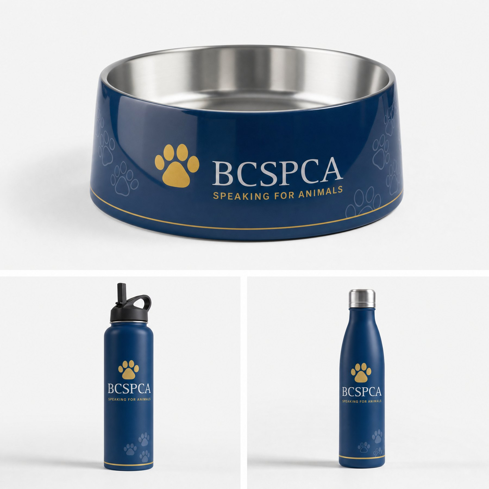

Report · Data Visualization · Campaign
An annual report concept for the BC SPCA — turning a year of rescue work into a clear, warm, and hopeful story, then extending it into campaign posters and branded merchandise. A project close to my heart as someone who cares about animal welfare.
Layout, infographics, posters & merchandise design
InDesign, Illustrator, Photoshop
BCIT Graphic Design

An annual report has to do two things at once: report the numbers, and make people feel the mission behind them. For the BC SPCA, that mission is animal welfare — so the design needed to feel trustworthy and data-driven, but also warm and human.
I built the report around the BC SPCA's navy-and-gold identity, generous photography, and a recurring idea — "every number represents a life changed" — then carried that voice outward into posters and merchandise.
An annual report shouldn't stay on the page. I pulled its strongest moments into framed campaign posters for the shelter's lobby — one built on the emotional "second chance" message, the other turning the year's impact numbers into a single, scannable wall piece.


To carry the brand into everyday moments, I designed a small merchandise set around the BC SPCA's navy-and-gold paw identity — split across the two sides of its mission:
For the animals — a branded pet water bowl for the animals in care.
For the people — a stainless sports bottle for the supporters who make the work possible.

See more work or get in touch.